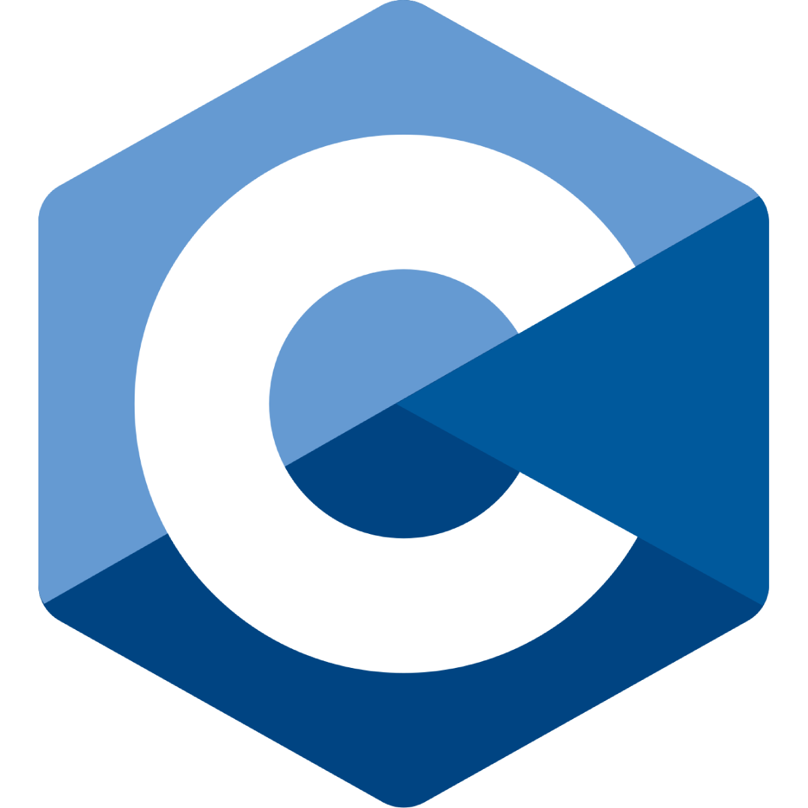
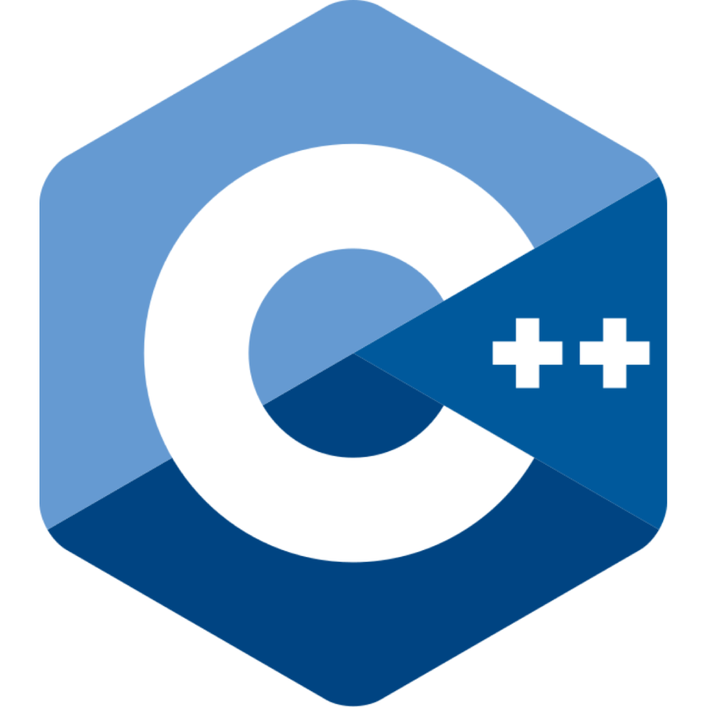
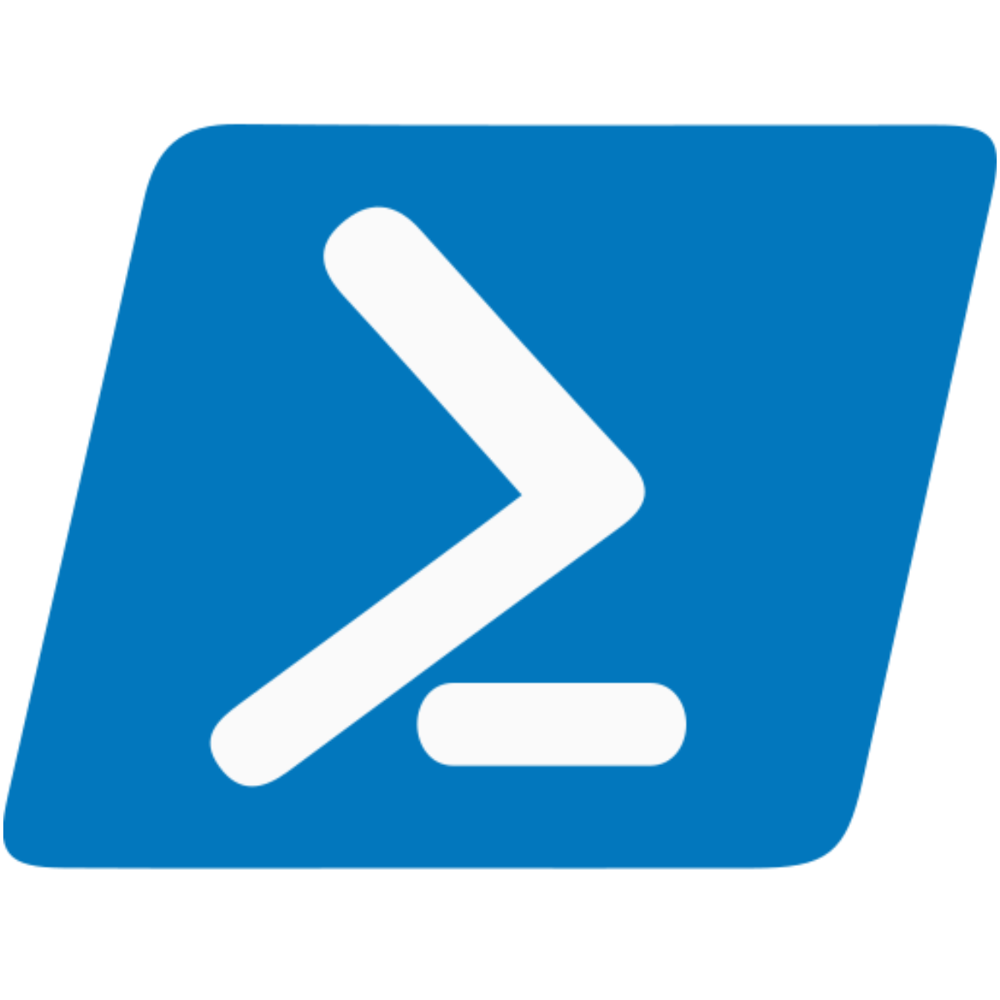
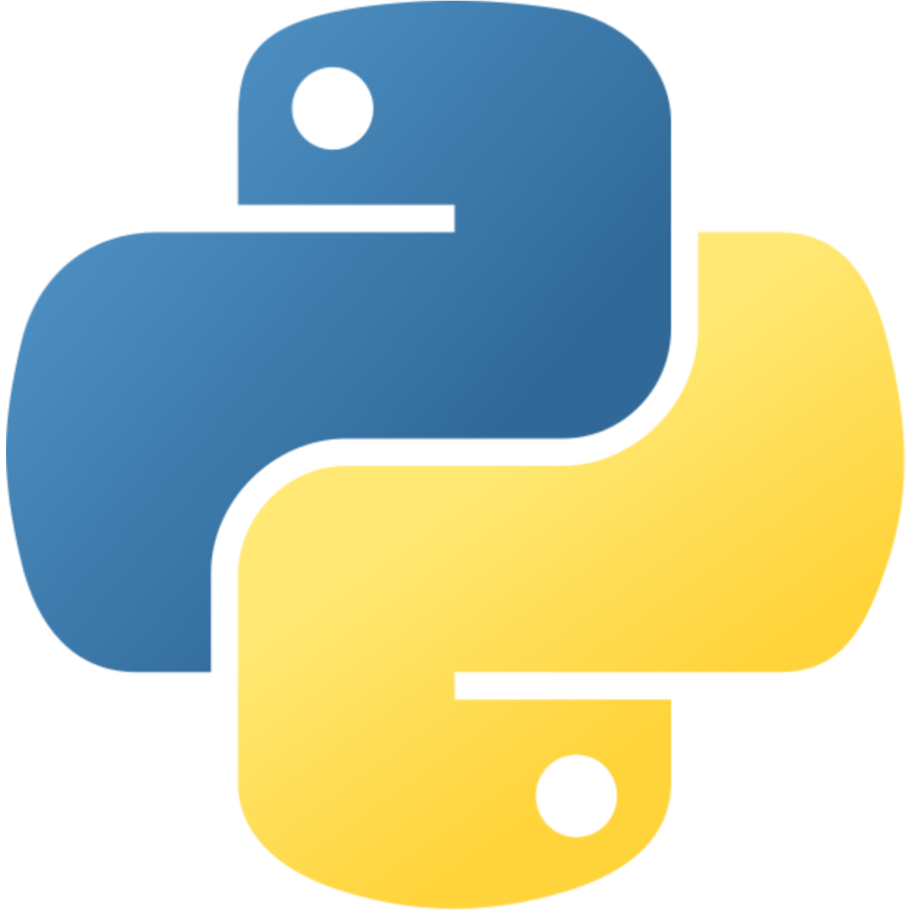

À Propos de moi
Bonjour, je m'appelle Paul SICOLI,
je suis étudiant en première année d'informatique en BTS SIO (Brevet de Technicien Supérieur: Services Informatique aux Organisations) option SLAM (Solutions Logicielles et Application Métier), actuellement au lycée Saint-Francois Des Sales à Alençon.
Dans cette section je vous présenterais mon parcours scolaire, professionnel, mes experiences et les compétences que j'ai su en tirer.

Mon Experience Professionnelle
• < (2020-2023) MODDING/CRÉATION D'ADDONS
- Gestion de versions et maintenance du code
- Documentation et mise à jour des changelogs
- Feedback utilisateur & déploiement de patchs correctifs
- Notions sur Blender, Unreal Engine et langage de programmation LUA
• < (2023-2024) ÉTUDES EN INFORMATIQUE : ÉCOLE 42 LE HAVRE
- C: Programmation en langage C (Librairie Standard LibC)
- SSH: Configuration et usage de protocoles de communication interserveur
- SUDO/UFW: Configuration de politiques de sécurité strictes sur systèmes UNIX
- SHELL: Utilisation d'une interface en ligne de commande, scripts en BASH
• < (2024-2026) ÉTUDES EN INFORMATIQUE : BTS SIO
- PROGRAMMATION: Paradigmes de programmation (Fonctionelle et Orientée Objet)
- CODAGE: Fondamentaux du langage de programmation Python & PHP
- VIRTUALISATION: Machines virtuelles sur VirtualBox et VMware
- GLPI: Mise en service, émission et gestion de tickets helpdesk
- DROIT: Droit informatique et cyberéthique (CNIL, RGPD, EBIOS)
Mon Projet Pro.
(...)
Mes Compétences
Languages de Programmation/Scriptage/Balisage
-
C
 -
C++
 -
BASH/POWERSHELL
 -
Python
 -
HTML/CSS


-
PHP
Mes Compétences Transversales
• Rigoureux
• Enthousiaste
• Méticuleux
• Inventif
• Motivé
• Pédagogue